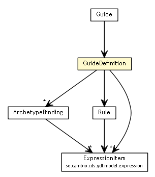

se.cambio.cds.gdl.model
Class GuideDefinition

java.lang.Object
 se.cambio.cds.gdl.model.GuideDefinition
se.cambio.cds.gdl.model.GuideDefinition
public class GuideDefinition
- extends Object
Guide definition object
- Author:
- rong.chen
GuideDefinition
public GuideDefinition()
GuideDefinition
public GuideDefinition(List<ArchetypeBinding> archetypeBindings,
List<String> preConditions,
Map<String,Rule> rules)
getArchetypeBindings
public List<ArchetypeBinding> getArchetypeBindings()
- Returns:
- the archetypeBindings
getPreConditions
public List<String> getPreConditions()
- Returns:
- the preConditions, list of pre-conditions joined by default AND operator
getRules
public Map<String,Rule> getRules()
- Returns:
- the rules
setArchetypeBindings
public void setArchetypeBindings(List<ArchetypeBinding> archetypeBindings)
- Parameters:
archetypeBindings - the archetypeBindings to set
setPreConditions
public void setPreConditions(List<String> preConditions)
- Parameters:
preConditions - the preConditions to set
setRules
public void setRules(Map<String,Rule> rules)
- Parameters:
rules - the rules to set
hashCode
public int hashCode()
- Overrides:
hashCode in class Object
equals
public boolean equals(Object obj)
- Overrides:
equals in class Object
getPreConditionExpressions
public List<ExpressionItem> getPreConditionExpressions()
- Returns:
- the preConditionExpressions
setPreConditionExpressions
public void setPreConditionExpressions(List<ExpressionItem> preConditionExpressions)
- Parameters:
preConditionExpressions - the preConditionExpressions to set
Copyright © 2013 Cambio. All Rights Reserved.